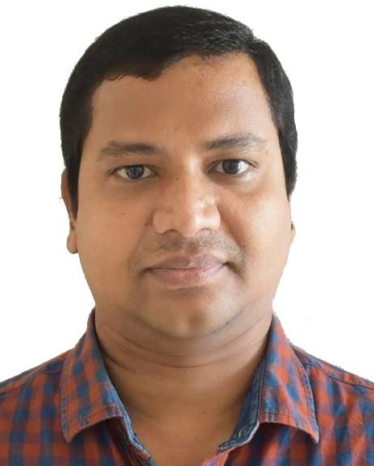

| Degree | University | Period |
|---|---|---|
| Doctor of Philosophy Ph.D. | National Institute of Technology, Tiruchirappalli, Tamil Nadu, India | 2016-2020 |
| Master of Technology M. Tech. (CSE) | Jawaharlal Nehru Technological University, Kakinada, Andhra Pradesh, India | 2008-2010 |
| Bachelor of Technology B. Tech. (CSE) | Jawaharlal Nehru Technological University, Hyderabad, Andhra Pradesh, India | 2003-2007 |
| Role | Institute | Period | |
|---|---|---|---|
| Assistant Professor | Indian Institute of Information Technology, Kottayam, Kerala (An Institute of National Importance) | July 2021 - till date | 3 Yrs |
| Assistant Professor | Gandhi Institute of Technology and Management (GITAM Deemed to be) University, Hyderabad. (NIRF: 71) | Aug. 2020 - July 2021 | 1 Yr |
| Research Fellow | National Institute of Technology, Tiruchirappalli, Tamil Nadu, India. | Aug 2016 - July 2020 | 4 Yrs. |
| Assistant Professor | Vignan's Foundation for Science, Technology & Research University, Guntur, Andhra Pradesh, India. (NIRF: 88) | Oct. 2010 - July 2016 | 5 Yrs. 10 Mon. |
| Assistant Professor | Vignan's Engineering College, Vadlamudi, Andhra Pradesh, India. | June 2007- Sept. 2008 | 1 Yr. 3 Mon. |
| Title | Organizing Institute, Place | Period | |
|---|---|---|---|
| One-week FDP cum Workshop on Advanced Computer Vision for Image & Video Analysis and Applications | Indiain Institute of Information Technology Kottayam | June 17 - 21, 2024 | 5 Days |
| International Conference on Research in Engineering, Computers & Technology | National Institute of Technology, Tiruchirappalli, Tamil Nadu, India. | 8th - 10th Sept. 2016. | 3 Days |
| Workshop on "Apps Fluxus 2015" | VFSTR University, Guntur, Andhra Pradesh, India. | 27th - 29th March 2015 | 3 Days |
| Title | Journal/ Conference Details |
|---|---|
| Reviewer - Journal | Signal Image and Video Processing, Springer |
| Reviewer - Journal | Cognitive Neurodynamics, Springer |
| Reviewer - Journal | Multimedia Tools and Applications, Springer |
| Reviewer - Journal | Behaviour & Information Technology, Taylor & Francis. |
| Reviewer - Journal | SADHANA, Springer Nature. |
| Reviewer - Journal | Cogent Engineering, Taylor & Francis Group, UK. |
| Guest Editor | Special issue on "Advances in Cellular Automata Applications with Cryptography", in the journal "American Journal of Neural Networks and Applications" |
| Reviewer - Conference | 7th International Conference on Computer Vision and Image Processing (CVIP 2022) conducted by MNIT Nagpur. |
| Reviewer - Conference | COMPSAC 2020 IT in Practice (ITiP) Symposium, Milan, Italy. |
| Reviewer - Conference | TENCON19, Kochi, Kerala, October 17-20, 2019 |
| Title | Organizing Institute, Place | Period | |
|---|---|---|---|
| One-week FDP cum Workshop on Advanced Computer Vision for Image & Video Analysis and Applications | Indiain Institute of Information Technology Kottayam | June 17 - 21, 2024 | 5 Days |
| 5 Day FDP cum WORKSHOP on Image Processing Using Python Programming | Indiain Institute of Information Technology Kottayam | June 10 - 14, 2024 | 5 Days |
| Indo-Taiwan 2-Day workshop on Intelligent Interet of Things | Indiain Institute of Information Technology Kottayam | 27th - 28th October 2022 | 2 Days |
| SERB Sponsored Statistical Modelling & Computational Intelligence | National Institute of Technology, Tiruchirappalli | 6th - 12th December 2021 | 7 Days |
| FDP on "MATLAB Essentials" | VFSTR University, Guntur, Andhra Pradesh, India. | 9th - 14th May 2016 | 6 Days |
| Workshop on "IBM Worklight" | Chirala Engineering College, Chirala, Andhra Pradesh, India. | 11th - 12th January 2016 | 2 Days |
| Paper Title | Conference Name, Organizing Institute, Place | Period |
|---|---|---|
| Multi-Modal Emotion Recognition from Audio and Visual Data | 7th International Conference on Soft Computing and Signal Processing (ICSCSP-2024) at Malla Reddy College of Engineering & Technology, Hyderabad, India. | JUNE 21-22, 2024 |
| Person Re-Identification and Path Tracking from Surveillance Cameras using Deep Learning | 7th International Conference on Soft Computing and Signal Processing (ICSCSP-2024) at Malla Reddy College of Engineering & Technology, Hyderabad, India. | JUNE 21-22, 2024 |
| Presentation attack detection for multispectral face biometric system using federated learning | International Conference on Innovations and Advances in Cognitive Systems ICIACS 2024 at Builders Engineering College, Kangayam, Tamil Nadu, India. | 27-28, May 2024 |
| A diagnosis model based on federated learning for lung cancer classification | International Conference on Science, Engineering Management and Information Technology (SEMIT 2023) in Ankara, Turkey | 14-15 September 2023. |
| A diagnosis model based on federated learning for lung cancer classification | International Conference on Science, Engineering Management and Information Technology (SEMIT 2023) in Ankara, Turkey | 14-15 September 2023. |
| Enhanced Brain Tumor Classification with Inception V3 and Xception Dual-Channel CNN | ICEAI 2023: International Conference on Evolutionary Artificial Intelligence (ICEAI 2023), Taylor's University, Malaysia | 13-14, September 2023 |
| Deep Learning-Based Classification of Lung Cancer Lesions in CT Scans: Comparative Analysis of CNN, VGG-16, and MobileNet Models | 4th International Conference on Image Processing and Capsule Networks (ICIPCN - 2023), organized by Tribhuvan University (Pulchowk Campus), Lalitpur, Nepal | 10-11, August 2023 |
| Application of Deep Transfer Learning in Detection of Lung Cancer: A Systematic Survey | Emerging Technologies for Sustainable Development (OTCON 2.0) conducted by OP Jindal University, Raigarh, Chattisgarh, India | 8th-10th February 2023 |
| Academic dishonesty detection using human pose estimation | 7th International Conference on Inventive Systems and Control (ICISC 2023), Coimbatore, India | 30th-31st January 2023 |
| A novel approach to FER using PCA, Gabor Wavelets and LBP | International Conference on Recent Trends in Automation, Vasireddy Venkatadri Institute of Technology, Guntur, Andhra Pradesh, India. | 15th-16th Nov. 2018 |
| Morphology based tense aspect disambiguation for sentences in Telugu to English translation | International Conference on Recent Trends in Automation, Vasireddy Venkatadri Institute of Technology, Guntur, Andhra Pradesh, India. | 15th-16th Nov. 2018 |
| Facial expression recognition using Geometric landmark points and convolutional neural networks | International Conference on Inventive Research in Computing Applications, RVS College of Engineering and Technology, Coimbatore, Tamil Nadu, India. | 11th-12th July 2018 |
| Facial expression recognition using Kirsch edge detection, LBP and Gabor Wavelets | International Conference on Intelligent Computing and Control Systems, Vaigai College of Engineering, Madurai, Tamil Nadu, India. | 14th-15th June 2018 |
| Boot Multiple Operating Systems using USB Disk | International Conference on Electronics and Communication Systems, Karpagam College of Engineering, Coimbatore, Tamil Nadu, India. | 14th-15th Feb. 2014 |
| Title | Organization, Place | During | Student Name |
|---|---|---|---|
| - | IIIT Kottayam, Pala, Kerala | On going | Mr. Binu T.O. |
| Model Explainability for human facial emotion recognition | IIIT Kottayam, Pala, Kerala | On going | Ms. Jane George |
| Lung Cancer Nodule detection using Deep Learning techniques | IIIT Kottayam, Pala, Kerala (Co-Guide) | On going | Ms. Ruchi Rani |
| Computer Vision based agriculture pest detection | IIIT Kottayam, Pala, Kerala | On going | Mr. Sreekumar O S |
| Title | Organization, Place | During | Student Name |
|---|---|---|---|
| Power System Resilience A Machine Learning Approach | Indian Institute of Information Technology, Kottayam | Aug 2023 - May 2024 | Mr. Gokul Govind |
| Convolutional Neural Network-Based Realtime Multiple Diseases Identification in Coconut Plants | Indian Institute of Information Technology, Kottayam | Aug 2023 - May 2024 | Mr. K S Sudheesh |
| Privacy preserving secure Biometric authentication using Blockchain and federated Learning | Indian Institute of Information Technology, Kottayam | Jan 2023 - Dec 2023 | Mr. Manulal MP |
| Forecasting solar PV generation and iradience using LSTM | Indian Institute of Information Technology, Kottayam | Jan 2023 - Dec 2023 | Mr. Renjithlal Parameswaran |
| A diagnosys model based on federated learning for Lung Cancer Classification | Indian Institute of Information Technology, Kottayam | July 2022 - May 2023 | Ms. Ann Mary Babu |
| Investigation of Certain Deep Learning Models for early Lung Cancer classification in Computed Tomography | Indian Institute of Information Technology, Kottayam | July 2022 - May 2023 | Mr. Hareesh P.M |
| Vision based realtime inventory update in warehouse | Indian Institute of Information Technology, Kottayam | July 2022 - May 2023 | Mr. Amit Dey |
| Analysis of web server log files using Hadoop MapReduce to preprocess the log files and to explore the session identification and network anomalies | VFSTR University, Guntur, Andhra Pradesh, India. | Nov. 2015 - May 2016 | Ms. Jaladi Udaya Santhi |
| Automated Security Audit of Infrastructure Cloud for AWS | VFSTR University, Guntur, Andhra Pradesh, India. | Nov. 2015 - May 2016 | Ms. Saranu Yeshasri |
| Simulation of Image Encryption and Decryption using AES and RC4 Algorithms | VFSTR University, Guntur, Andhra Pradesh, India. | Nov. 2013 - May 2014 | Mr. N Ajay Kumar |
| An Efficient Approach for Fingerprint Recognition by Matching Minutiae Pairings | VFSTR University, Guntur, Andhra Pradesh, India. | Nov. 2014 - May 2015 | Ms. Kotha Hari Chandana |
| Title | Organization, Place | During | Student Name |
|---|---|---|---|
| Multi-Modal Emotion Recognition from Audio and Visual Data | Indian Institute of Information Technology, Kottayam | Aug. 2023 - May 2024 | Eenadula Bhanuprakash Maridu Laasya Sri Guda Phanish Gotam Gorabh |
| Person Re-Identification and Path Tracking from Surveillance Cameras using Deep Learning | Indian Institute of Information Technology, Kottayam | Aug. 2023 - May 2024 | Kappaganthu Brahmarambhika Jyothy Chappidi Veera Nagendra Baranidaran M Vansh Jagyasi |
| A study on efficiency of transfer learning from joint training of inceptionv3 and xception models on brain tumor classification | Indian Institute of Information Technology, Kottayam | Aug. 2022 - May 2023 | Vaisakh NP G Rithish Kumar Reddy K Sai Nruthik Sri Harsha |
| Academic Dishonesty Detection in Exams using Deep Learning Techniques | Indian Institute of Information Technology, Kottayam | Aug. 2021 - May 2022 | Dhanush Binu |
| Title | Organization, Place | During | Student Name |
|---|---|---|---|
| University Admission Process Automation | VFSTR University, Guntur, Andhra Pradesh, India. | Nov. 2011 - May 2012 | Desu Sathvik Dhulipalla Satya Sai Akshay Motamarri Chetan |
| Student Information System | VFSTR University, Guntur, Andhra Pradesh, India. | Nov. 2011 - May 2012 | Narisetti Karishma Paladugu Saranya Yarlagadda Chanti |
| Student Feedback System | VFSTR University, Guntur, Andhra Pradesh, India. | Nov. 2011 - May 2012 | Yarra Ramdasu Achala Ramu A. Venkata Naga Kailash |
| Academic and Emotional Progression of Student | VFSTR University, Guntur, Andhra Pradesh, India. | Nov. 2011 - May 2012 | Choppa Abhiram Kumar Dasari Venkata Avinash Gajula Leela Naga Devi |
| Faculty Assessment System | VFSTR University, Guntur, Andhra Pradesh, India. | Nov. 2011 - May 2012 | G. Siva Rama Krishna G. Dhanunjaya Lakshmi Jangala Sunny |
| University Examinations Automation | VFSTR University, Guntur, Andhra Pradesh, India. | Nov. 2011 - May 2012 | R. Sri Anjaneya Sai Swaroop Vadlamudi Sai Saketh Ram Dantu Pavan Kumar |